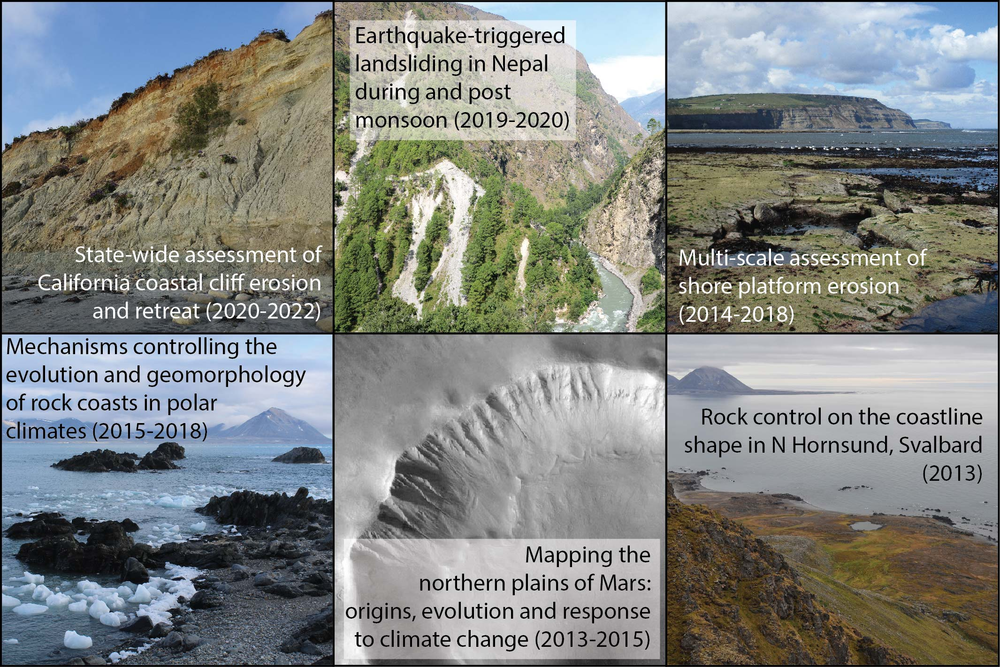

I am a geomorphologist interested in coastal processes and landsliding.
I use a range of techniques including terrestrial and marine field surveying (Terrestrial Laser Scanning, close-range photogrammetry, UAV,
time-lapse photography, geomorphological mapping, rock hardness testing, wave pressure sensor deployment, CTD and ADCP), computer-based analyses
(point cloud processing, image processing, GIS analyses, numerical modelling) and laboratory work (cosmogenic exposure dating).
I conducted fieldwork in Svalbard, Arctic Russia, South Shetlands, Nepal, UK, California and North Pacific.
Involvement in scientific projects:
